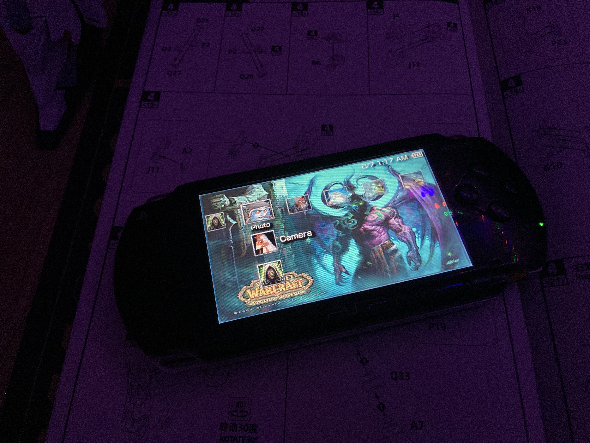
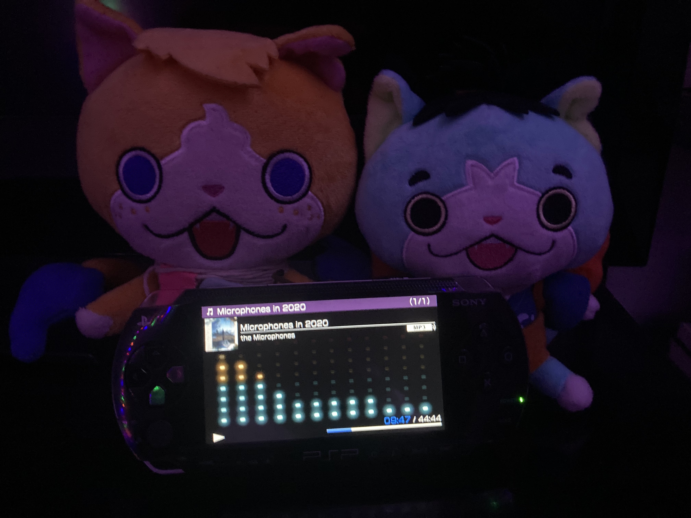

That's right. I got a PSP. Bought it from my cousin, Ryan, who's like 30 now and hasn't used it in over a decade and a half. It's a near-mint 1000 model. And yeah, homebrewing it was incredibly easy. I put on a WoW theme that has cool colors and icons also a hot, buff man on it. Dunno who that is, I've never played WoW. I ripped the CDs I have and put them on there. I've been playing a shitton of Lumines. Like, so much Lumines.


Photoshoot of the PSP.
Since I last posted here my most consistently-close friend of the past 3.5 years cut off contact with me, because they don't have the emotional bandwidth to be my friend anymore. Which, is understandable. It's left a gaping hole that I don't even know how to address. It's impossible to feel the scale of the pain, it's so large, it just doesn't go in. I feel nothing. It was very formal and nice, and they were very logistical about it, which I respect extremely highly. It's. A not-insignificant amount of the pain of losing a friend is having to figure out the logistics of detangling your life from theirs. When, I mean, my other extremely-close friend ended things last month, it was in absence of logistics, so, there are still a lot of promises and duties and agreements I need to settle.
It hurts so much. I can't express with words how much it hurts. People've stopped replying to me — which I understand, you know, it's, I stopped replying to them a while ago — but. It's so hard.
I'm hearing myself in my head again, ketamine always lessens the aphantasia. There's nobody else in there but me right now. Except, about a week ago, I was in bed, and I heard Krak. For just a few words, but they were of Krak in my mind, and I knew it so clear. It's minor, you know, it's really nothing, but I thought I was free of him and he was there again, for a fleeting moment. And, I mean, I don't know. I'm so tired of his psychomental existence.
The person who just put up reasonable range was the person who'd seen me through my worst, through the entirety of Krak — which, you know, the whole thing makes you sound crazy when you explain it — and I know for a fact they remember the worst much better than I do. And they were so fucking supportive, I mean. I feel like I've lost, just. I mean, I said it earlier, it's impossible to feel the scale of this, I'm up a creek without a paddle trying to describe it. And I killed it! So much of it was me.
I don't know what the future holds for me. I think Island Off Outer Darkness might be a monument to my stupidity and hubris at this point. But, you know, as Dan Bejar said, "don't shelve the opera, you've been working this long on it." In my personal life and in every single unpublished blog post I make I've mentioned Guido 8 1/2, 'cuz, y'know, I'm Guido, but, like, not hot, or a great artist, or well-known. But it's, I mean, that's me. I dreamt I was Harrier a few nights ago, too, and that was, quite miserable. Though it felt deserved.